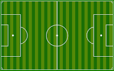
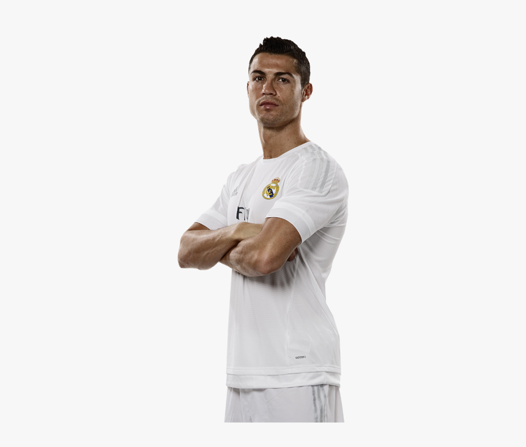
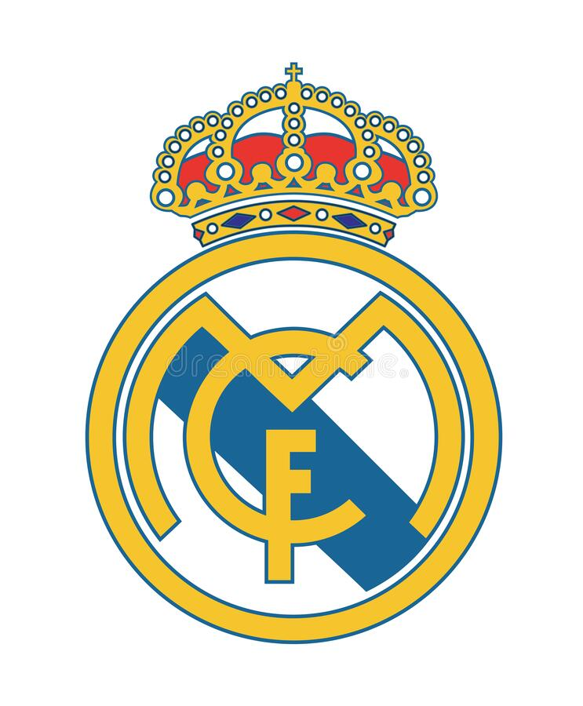

Soccer has been a big part of my life for as long as I can remember. I have always dreamed of playing professionally, and in the US, there are many opportunities to do so. However, it takes a lot of hard work, dedication, and talent to make it to the professional level.
I started playing soccer when I was young, but I never took it seriously until later in life. Unfortunately, I started too late to have a chance at playing professionally. But, that hasn't stopped me from enjoying the sport and following it closely.

My favorite player and team are Cristiano Ronaldo and Real Madrid. I have always admired Ronaldo's skill, athleticism, and drive to be the best. Real Madrid is one of the most successful and prestigious soccer clubs in the world, and it has a rich history of producing great players.  
My experiences
I recently went to the world cup and my love for soccer only got stronger. The first thing our family did was get a plane ticket to Qatar, a country in the middle east that I didnt know much of. Qatar hosted the 2022 FIFA World Cup was a once-in-a-lifetime opportunity to witness the best athletes in the world compete. We were fortunate enough to obtain tickets to the Argentina vs. Croatia semi-final and the France vs. Argentina championship. I was in awe of the players' skill, fervor, and determination, which made these games nothing short of spectacular. The legendary Lionel Messi was a player who particularly captured my attention. His performance in both matches exemplified his extraordinary speed, agility, and control of the ball. It appeared as though he was playing on an entirely different level than everyone else. Messi's dominance on the field was truly what sparked my passion for soccer.